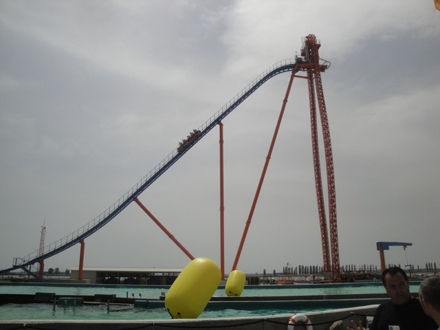
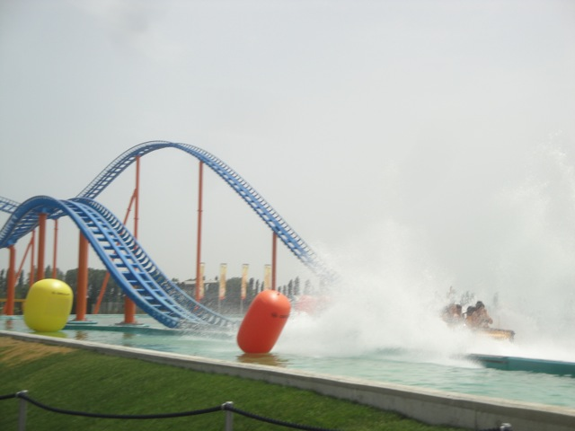
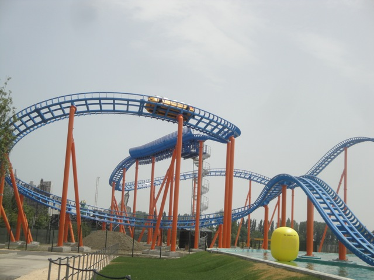
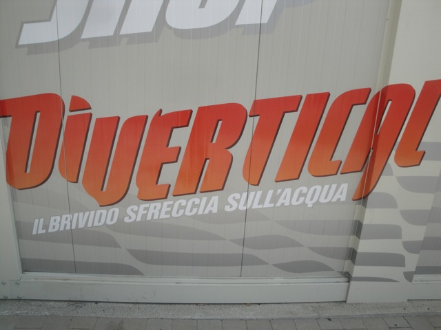
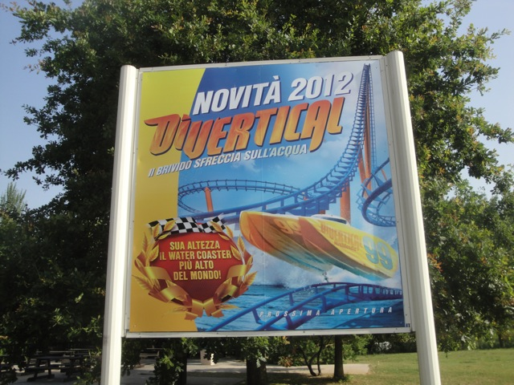

| |
Divertical Review

Today at Mirabilandia, we'll be reviewing Divertical. Mirabilandia's water coaster. And knowing how hot it gets in Italy, I can imagine that this will get quite a long wait. But don't worry, this is by far, the best water coaster I have been on and easily the most unique water coaster in the world. It uses the same technology as the now defunct Pilgrim's Plunge at Holiday World. And since that ride no longer exists, this is the only ride in the world with this technology. So yeah. This is gonna be a really good water coaster. We get in, pull down the lap bars, and are off. It starts out with us just sailing around. There's a couple splashes, but mostly, we're just cruising around before we make our way up to the elevator. The elevator is not completely straight up, so you actually get a few laterals as you're climbing up. It's not strong or anything. But just enough to make someone feel uneasy. And here, the elevator is nearly 200 ft tall. DAMN!! This thing is a Hyper Water Coaster. F*cking Impressive!!! But so far, it doesn't even seem like a water coaster. At this point, it just seems like a clone of Pilgrim's Plunge, only slightly bigger. Just wait and you'll see the roller coaster portion of the ride. We then drop, gaining a crazy amount of speed for a water coaster. Just WOW!! We then go through some straight track. There's a little water here, but it doesn't get us wet, but rather, just acts like a trim brake. We then rise up a nice sized hill, shaving off our speed, but still keeping us going enough to go around some curves at a decent speed. We head down a small little dip and go around another banked curve. It's not insane or anything, but we get some good laterals. But we're still going really fast, so we have to go through a mid course brake, but again, this just acts like a trim brake as we glide through it and head around another banked turn into a curved drop. We head over a small little hump, drop down and SPLASH!!! INTO THE WATER!!! You get WET on this ride. And that slows you down as you roll back into the station dripping wet. There's no contest. Divertical is easily the best water coaster I've ridden and most likely the best in the world. Not only does this one actually count as a credit, but it's by far the fastest, has some fun moments, gets you wet in a place where you really want to get wet, and is just an overall fun ride. I hope more water coasters similar to Divertical are built and definetly recommend riding it when you visit Mirabilandia.
7/10
Location: Mirabilandia
Opened: 2012
Built by: Intamin
Last Ridden: June 20, 2012
Divertical Photos




Home
|